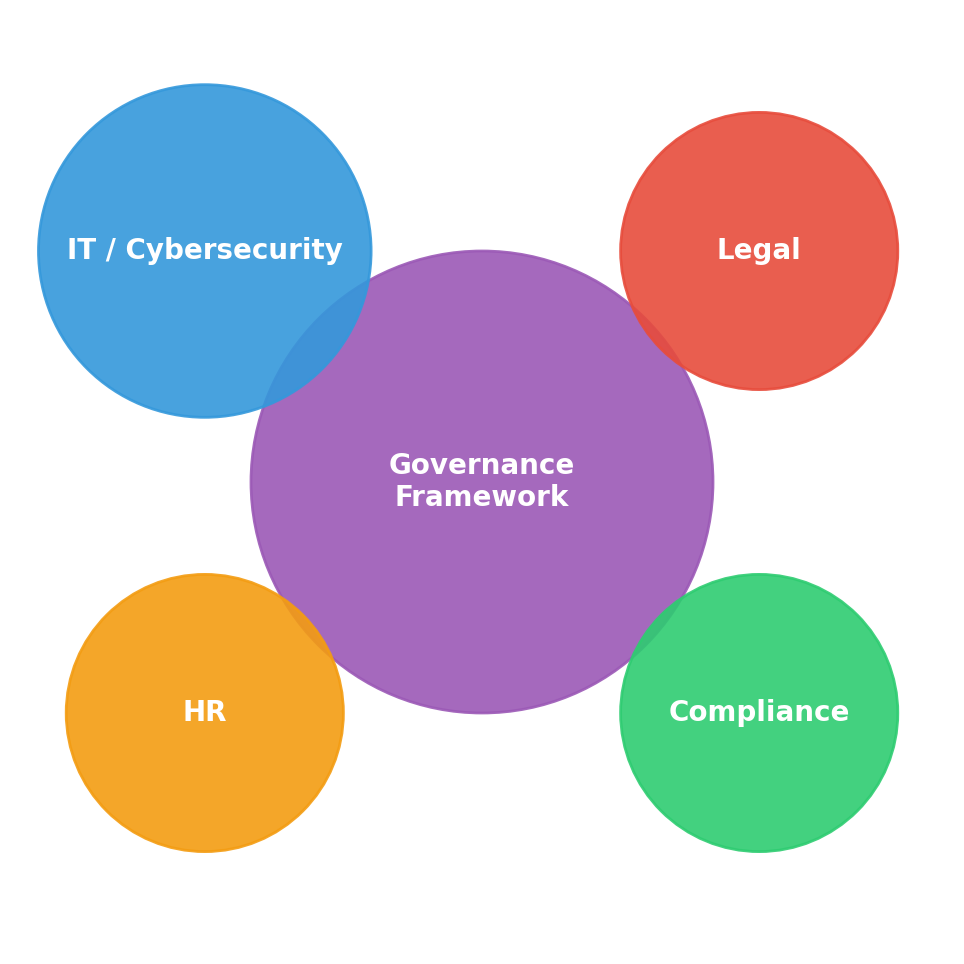

Module 2: Readiness#
Governance Model#
Being prepared for deepfake risks requires effective governance. Several studies have shown that no department can handle AI-driven hazards on its own (Evans et al., 2021). Teams from IT, legal, HR, and compliance must work together to create a thorough governance framework. These cross-functional committees ensure that risk assessment, policy creation, and incident response are all coordinated and in line with corporate goals.

Key governance recommendations include:
Human Resource - duties include developing and implementing targeted training programs, conducting role-playing exercises, and fostering a security-aware culture in addition to following policies. They also supervise internal reports and help employees who could be the victims of deepfake social engineering.
IT/Cybersecurity - take note of how detection technologies are implemented and maintained, especially how often artificial intelligence models are retrained and calibrated. Additionally, they oversee the technical assessment of occurrences.
Legal - in addition to responsibility and compliance, the legal team must remain current on the intricate and dynamic worldwide regulatory landscape.
Compliance - ensures that all preparation programs, such as technological controls and staff training, adhere to evolving internal and legal requirements.
Decision-making authority: Clearly state which team has primary decision-making power in each threat scenario, as well as the escalation and reaction criteria.
Policy formulation and evaluation: In view of evolving AI threat intelligence, new technological advancements, and lessons learnt from previous instances, governance committees must regularly update policies.
Reporting and documentation: Maintain detailed records of all decision-making processes and incident reactions to guarantee accountability and continuous improvement (JournalsDG, 2025).
Organizations can guarantee coordinated, responsible, and legally sound reactions to deepfake threats by integrating governance into the operational and strategic layers.
Tools & Infrastructure Readiness#
To detect, verify, and eliminate deepfake content, technical preparedness is essential. Advanced AI-based detection methods, metadata verification, and content provenance systems are all highly recommended in the literature. According to Awodiji et al. (2023), forensic analysis and neural networks can be used to identify subtle differences in modified media.
Detection techniques - AI-driven audio-visual and metadata forensic techniques are crucial for identifying manipulated content, claim Awodiji et al. (2023) and Tsinganos (2023). These tools must be updated often to stay abreast of emerging attack techniques.
Operational Integration - Response delays are reduced, and real-time monitoring and timely alerts are ensured by incorporating detection tools into existing SOC operations (Kshetri & Voas, 2025).
Logging & Analysis - Complete and accurate records enable post-event evaluation and timely threat action. The results of Evans et al. (2021), who emphasize that comprehensive documenting strengthens organizational resilience, are supported by this.
Coordination Across Teams - Tools cannot operate efficiently without governance and trained personnel, which promotes a balance between technology and human oversight.
The foundation of a proactive defense strategy is an organization’s technical infrastructure, which minimizes operational disturbance and allows for quick detection and remediation.
Chain of Responsibility & Escalation#
Defined roles and escalation procedures are necessary for the efficient handling of AI-based risks. According to research, unclear accountability frequently causes incident response to be delayed, which raises the possibility of damage (Kshetri & Voas, 2025).
Tsinganos (2023) describes escalation mechanisms with multiple tiers: | Tiered Response | SOC analysts find irregularities, bring them to the attention of governance departments, and involve top executives if an incident has regulatory or reputational implications. According to Tsinganos (2023), having distinct layers reduces confusion and response time.| | Accountability for Decision-Making | Kshetri & Voas (2025) assert that unclear chains of accountability might result in activities being postponed or executed improperly. By assigning roles for detection, verification, and decision-making, accountability is guaranteed at all levels.| | Cross-functional Coordination | The legal, communications, HR, and IT departments working together enhances operational efficiency and compliance with corporate policies (JournalsDG, 2025). |
This multi-tiered strategy guarantees effective event management, defined roles, and a coordinated organizational response encompassing technological, legal, and human aspects.